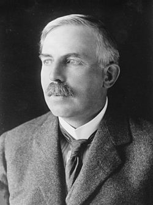

(Nueva Zelanda, 1871-Londres, 1937)
Por sus trabajos en el campo de la física atómica, Ernest Rutherford está considerado como uno de los padres de esta disciplina. Investigó también sobre la detección de las radiaciones electromagnéticas y sobre la ionización del aire producida por los rayos X. Estudió las emisiones radioactivas descubiertas por H. Becquerel, y logró clasificarlas en rayos alfa, beta y gamma.